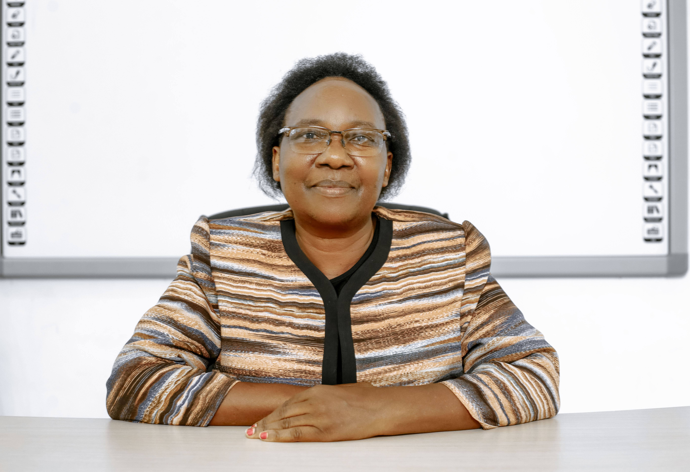

Welcome to the EASTC Convocation Page
.jpg)
.jpg)
.jpg)
.jpg)
.jpg)
Some of the events in pictures, of the last 5th Convocation
Convocation
The Convocation of Eastern Africa Statistical Training Centre continues the tradition within academic institutions of gathering together academicians, students, alumni, benefactors, and industry proffesionals as stakeholders of the university community. It is the time to excgange views on topical issues that touch teaching, research, and proffesional development, The Convocation unit at EASTC strives to expand and diversify the network of its engaged alumni, The unit seeks to develop innovative initiatives tailored to engage current students and graduates of the EASTC.
Main Aim of Convocation
- Celebration of achievements
- Recognition and Awarding of degrees
- Community building
- Inspiration and motivation
- Networking and opportunities
Leadership organisation of EASTC Convocation

Ms. Nyambilila M. Minga
The president of EASTC Convocation
.jpg)
Dr. Tumaini M. Katunzi
The vice president of EASTC Convocation
Dr. Joyce Minja
The Honorary treassurer of EASTC Convocation